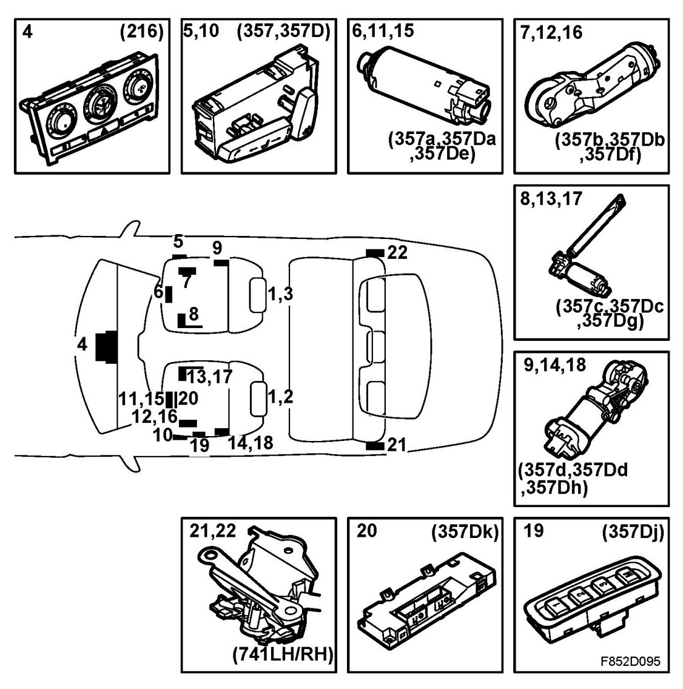
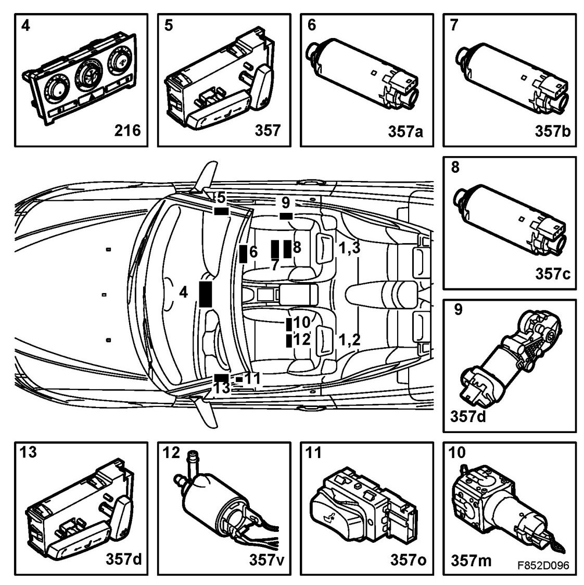
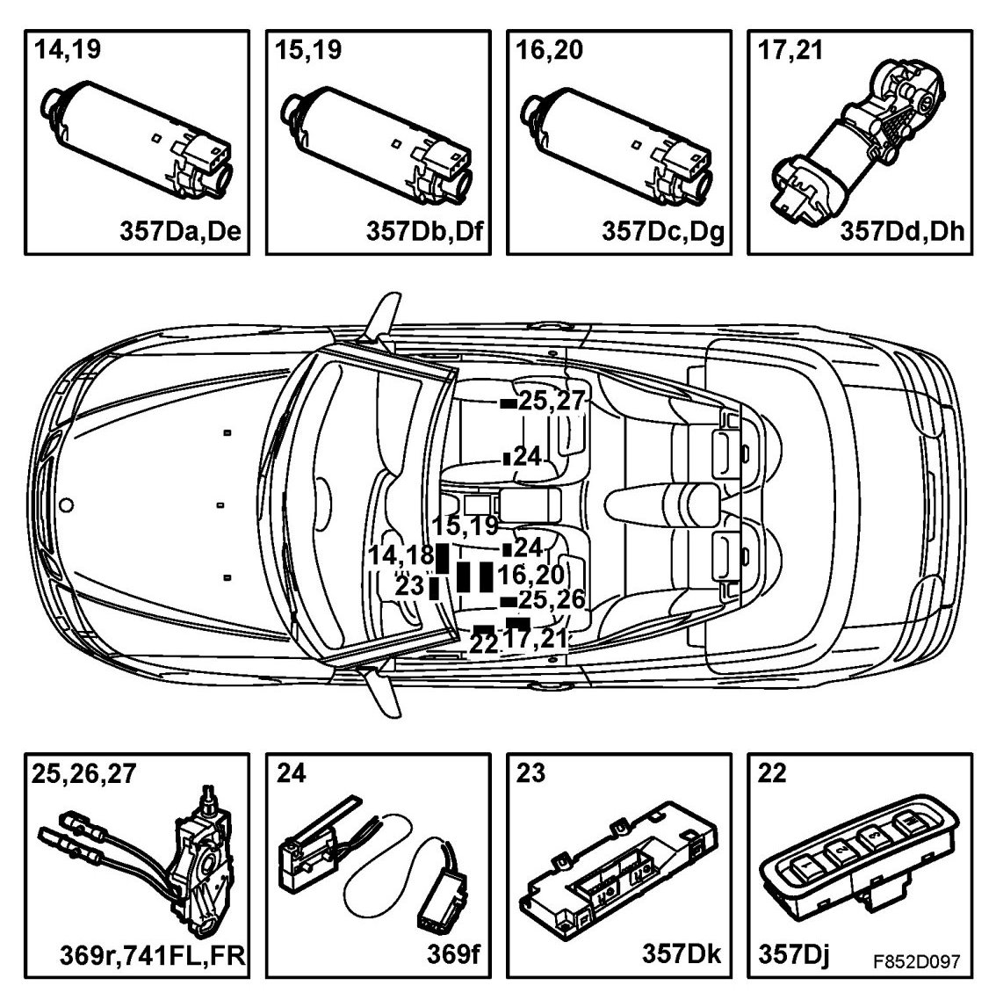

Main Components
Main Components
4D, 5D:

1. Heating pad temperature sensor (254)
2. Left seat heating pad (64FL)
3. Right seat heating pad (64FR)
4. Automatic climate control ACC (216)
5. Electrically adjustable seat switch (357)
6. Legroom adjustment motor, electrically adjustable seat (357a)
7. Motor, tilt adjustment, electrically operated seat (357b)
8. Motor, height adjustment, electrically operated seat (357c)
9. Backrest adjustment motor, electrically adjustable seat (357d)
10. Switch, electrically adjustable driver's seat with memory (357D)
11. Legroom adjustment motor, electrically adjustable driver's seat (357Da)
12. Motor, tilt adjustment, electrically operated driver's seat with memory (357Db)
13. Motor, height adjustment, electrically operated driver's seat with memory (357Dc)
14. Motor, backrest adjustment, electrically operated driver's seat with memory (357Dd)
15. Electrically adjustable driver's seat with memory, legroom adjustment position sensor, (357De)
16. Position sensor, tilt adjustment, electrically operated driver's seat with memory (357Df)
17. Position sensor, height adjustment, electrically operated driver's seat with memory (357Dg)
18. Rear height adjustment position sensor, electrically adjustable driver's seat with memory (357Dh)
19. Memory switch, electrically operated driver's seat with memory (357Dj)
20. Electrically adjustable driver's seat with memory control module (357Dk)
21. Backrest rear left seat microswitch (741LH)
22. Backrest rear right seat microswitch (741 RH)
CV:


1. Heating pad temperature sensor (254)
2. Left seat heating pad (64FL)
3. Right seat heating pad (64FR)
4. Automatic climate control ACC (216)
5. Electrically adjustable seat switch (357)
6. Legroom adjustment motor, entry, electrically adjustable seat (357a)
7. Motor, tilt adjustment, electrically operated seat (357b)
8. Motor, height adjustment, electrically operated seat (357c)
9. Backrest adjustment motor, electrically adjustable seat (357d)
10. Motor, air pump, lumbar support (357m)
11. Switch, lumbar support (357o)
12. Valve, lumbar support (357v)
13. Switch, electrically adjustable driver's seat with memory (357D)
14. Legroom adjustment motor, electrically adjustable driver's seat (357Da)
15. Motor, tilt adjustment, electrically operated driver's seat with memory (357Db)
16. Motor, height adjustment, electrically operated driver's seat with memory (357Dc)
17. Motor, backrest adjustment, electrically operated driver's seat with memory (357Dd)
18. Electrically adjustable driver's seat with memory, legroom adjustment position sensor, (357De)
19. Position sensor, tilt adjustment, electrically operated driver's seat with memory (357Df)
20. Position sensor, height adjustment, electrically operated driver's seat with memory (357Dg)
21. Rear height adjustment position sensor, electrically adjustable driver's seat with memory (357Dh)
22. Memory switch, electrically operated driver's seat with memory (357Dj)
23. Electrically adjustable driver's seat with memory control module (357Dk)
24. Microswitch for backrest, folded down position (369f)
25. Microswitch for backrest, easy entry handle activated, seat (369r)
26. Microswitch for backrest, locked in upright position, left seat (741FL)
27. Microswitch for backrest, locked in upright position, right seat (741FR)